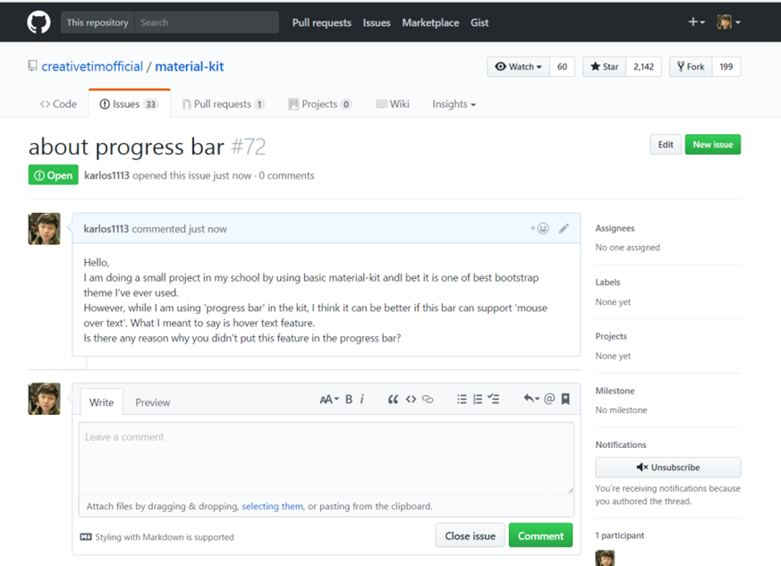

1. Sending an issue to bootswatch
1) 페이지 제작 도중 progress bar에 mouse hover text 기능이 들어가면 좋을 것 같다고 판
단해 bootswatch에 관련 이슈를 보냈다.
2) bootswatch theme들의 기능 개선이나 기능 추가를 위해 jqury 혹은 angular.js를 사용해도 되는지 여부를 묻기 위해 관련 이슈를 보냈다.
3) 해당 이슈에 대한 답변을 기다리는 중
2. Sending an issue to material-kit

1) material-kit 역시 페이지 제작 도중 progress bar에 mouse hover text 기능이 들어가면 좋을 것 같다고 판
단해 material-kit에 관련 이슈를 보냈다.
2) 해당 이슈에 대한 답변을 기다리는 중
1. Comparison of progress bars
1) Matrial-kit
2) Bootswatch
Basic
Contextual alternatives
Striped
Stacked
2. Paginations
1) Matrial-kit
2) Bootswatch
1) Matrial-kit
1) Matrial-kit
2. Improvement of progress bars by me
1) Bootswatch
Before(Basic)
After(Animated)
2) Material-kit
Before(Basic)
After(Slider)
After(Hover-text)
1) Bootswatch
After(Hover-text)